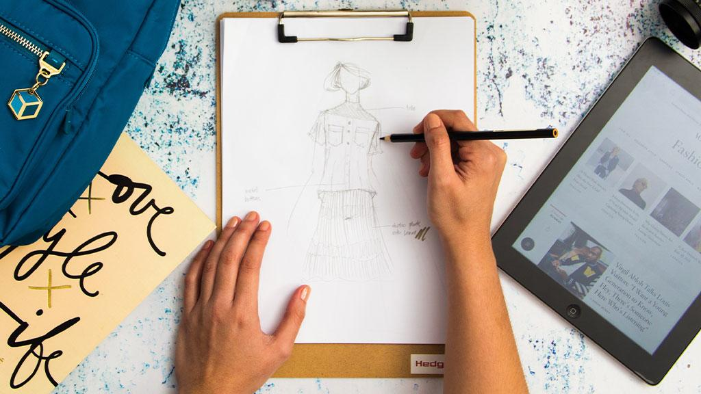
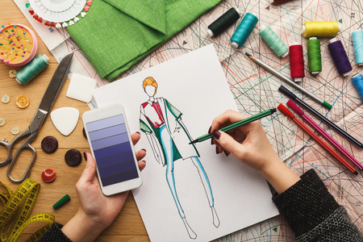
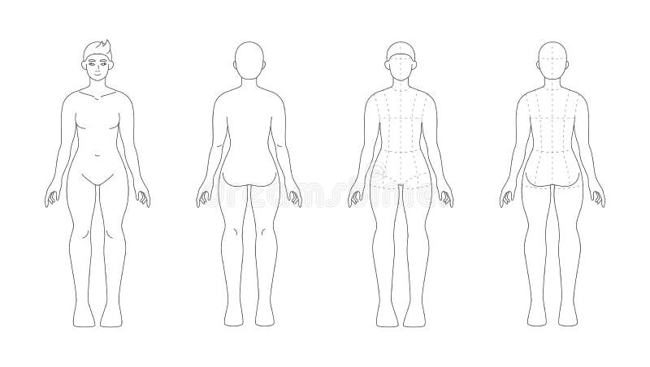
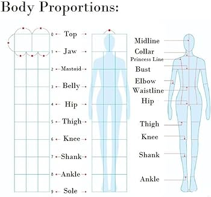

How to begin designing :D
Stap 1:
Once you've received positive feedback and made necessary adjustments, finalize your design. Prepare all necessary files and assets for delivery, ensuring they meet the required specifications.
Stap 2:
Conduct thorough research related to your design project. Understand the target audience, market trends, and competitors. Collect relevant data, images, and content that will inform your design decisions.
Stap 3:
Begin with rough sketches to explore different concepts and ideas. This can be done on paper or digitally. Brainstorm and jot down any creative thoughts or elements you want to incorporate into your design.
Stap 4:
Compile a mood board with visuals, colors, and textures that align with the overall theme and feel you want to convey. This helps set the tone for your design and provides a reference point during the creation process.
Stap 5:
Depending on your design type, choose the appropriate tools and software. This could be graphic design software like Adobe Creative Suite, web design tools like Figma or Adobe XD, or other specialized software.
Stap 6:
Create a draft or wireframe to outline the basic structure and layout of your design. Build upon your sketches, incorporating details and refining the design elements.
   